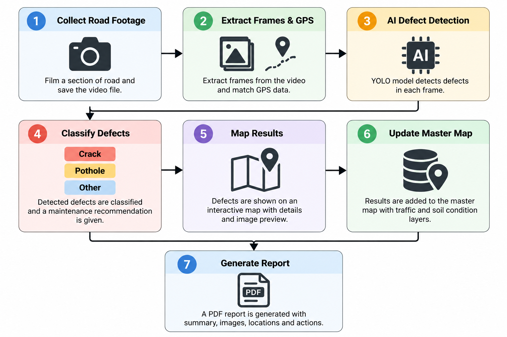
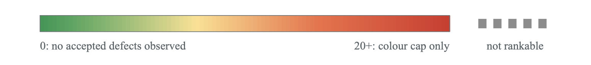
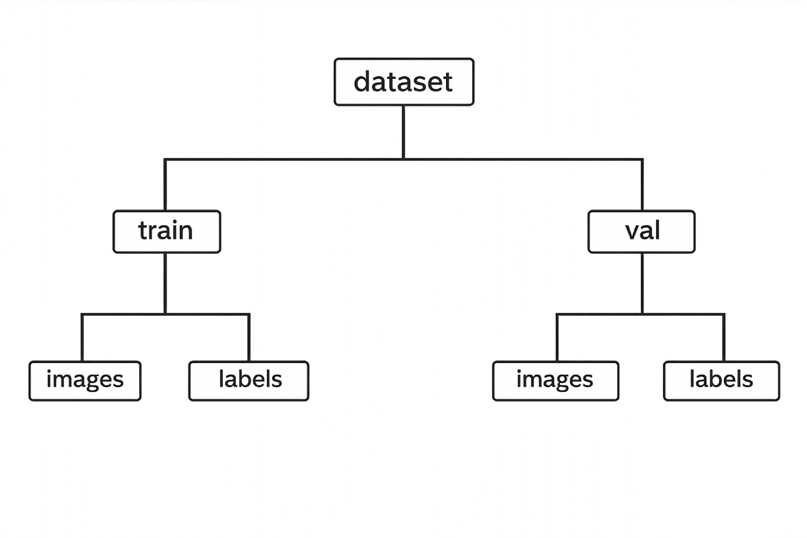

3.0 Methodology
This section outlines the method that was used to develop and train the AI-based pavement defect detection system. This section includes dataset selection, data preparation, model training and real-world collection to improve the model performance under New Zealand road conditions.
3.1 Data Sources
To determine a baseline model for this project a RDD2022 dataset was obtained from Dataset Ninja. This dataset was chosen as it had many labelled road defects varying across multiple countries including Japan, India, Czech Republic and others. This dataset provided a range of pavement conditions, lighting environments and defect types. This is important for training an AI-model as variation is required to establish a strong baseline model.
In addition, the dataset reduces the need for manually labelling photos. This is because the dataset comes with labels for each photo allowing an efficient conversion into YOLO format. This then made it possible to establish a strong baseline model before adding in locally collected New Zealand data.
3.2 Data Preparation
In the RDD2022 dataset the labels had to be converted from a JSON format into a YOLO text format before training the AI. This involved a script (convert for yolo.py) to be written. The script works by firstly determines the batch size, which means out of all the images how many will be put into that batch. Then the script randomly finds labels to reduce bias in the folder that have a matching image this is because earlier in testing analysis showed that some images don’t have labels or labels are empty. Then the script converts those labels from a JSON format into the YOLO text format. Then the script splits the labelled data into a train and a Val folder. The split is 0.2 which means 80% of the labelled data will go into a train folder and 20% into a Val folder. Once that is completed the script then creates a YAML folder. The YAML tells the YOLO model where the data is.
For the New Zealand data the data will be manually annotated in CVAT and then used to train the AI model. Once the mAP50 is above 0.75 the AI will annotate the data automatically which can save time and effort. However, to make sure that the labels are correct manual inspection will be carried out to determine if the labels are correct. If there are any wrong labels, they will be redone manually to make sure that the AI doesn’t get trained on wrong data
The script was then executed using the macOS terminal with a Python command (see Appendix A for command)
3.3 Model Training
A YOLO (You Only Look Once) object detection model was used to train the pavement defect detection AI. The model was trained using transfer learning from pretrained weights. Transfer learning enabled the model to reuse previously learned patterns to improve the reliability of defect detection.
The model development followed a version-based approach. Version 1 consisted of the RDD2022 dataset, which was used to establish the training pipeline, evaluate initial performance and have a strong baseline model for New Zealand pavements.
Initial training was conducted locally on a MacBook Air M2 using the computer's CPU. This was done to validate the dataset structure and make sure that the model configuration was working as expected and improving over time. However, due to the slow speed of training, thermal limitations and as the number of photos in each batch increased, training runs were often completed overnight. MacBook was kept turned on using the caffeinate command in terminal.
To improve training efficiency, the training workflow was moved onto a cloud-based GPU environment using Google Colab. Early runs using the small AI model utilised a Tesla T4 GPU. As further improvement was needed to support New Zealand data, the model was upgraded to the large YOLO model. This increased the computational demand significantly. To maintain practical training times, higher-performance GPUs were utilised. This included GPUs such as the NVIDIA A100 for training the large model and the H100 GPU. The Extra-large YOLO model was also briefly tested on the NVIDIA H100 GPU to see if increasing the model size could further improve the baseline model.
Throughout training, progress was tracked in a excel spreadsheet for each run by recording details and figures for each run. This included training time, number of training and validation images, number of epochs, precision, recall and mAP50. This allowed model performance to be visualised and compared across each batch. In addition to this spreadsheet, YOLO training outputted training performance metrics using a CSV file and across different graphs to evaluate the model performance.
The model was trained for 60 epochs. An epoch refers to one complete pass of the entire training dataset during the training process, allowing it to update and learn more efficiency. The image size of 640 pixels was selected to ensure adequate detail for defect detection without significantly increasing training time. Model YOLOv8L was the YOLO model selected to detect defects due to its balance between accuracy and efficiency, making it suitable for training on local hardware and cloud-based environments.
AI was executed using the macOS terminal with a Python command (see Appendix B for the command)
3.4 Data Collection in New Zealand
Because the original dataset (RDD2022) did not include New Zealand-specific pavement environments meaning the model required further training on local roads in New Zealand to improve accuracy and generalisation. In addition, the model needed to be tested in real-world conditions to make sure that the training from the RDD2022 dataset served as a baseline model.
Version 2 expanded on Version 1, where the model was trained on a smaller set of targeted photos manually captured using an iPhone 13 pro. These images were taken to provide the AI with specific defect types and provided higher quality, closeup examples of pavement defects to fill in gaps from the dataset and to train the AI on New Zealand pavements.
Version 3 involved the introduction of a vehicle-based data collection approach where an iPhone 13 pro was mounted on the windshield. The iPhone was mounted using a Ulanzi ZJ01 Extendable Magnetic Suction Cup, which provided a secure, stable and enabling hands-free operation while running a dashcam app to record road footage and GPS data during normal driving conditions. This mount allowed stable, consistent, and safe data collection which is required for training and testing the AI model. It also enabled the capture real-world conditions while driving such as different surface types, angles and varying lighting conditions. This provided the model with real-world conditions that it is intended to operate in.
Testing for Version 3 was on a preselected route that contained rural roads, motorway and urban roads. This was to check consistency across different road types and check how the model was improving overtime
In the proposal, a GoPro was initially considered for data collection due to its flexible mounting options and video recording features including GPS data. However, the model was a GoPro Hero 5 which was released about 10 years ago and was therefore considered outdated for this project. It was also less suitable due to the wide-angle lens which produced a field of view that was too wide for capturing road defects accurately. As a result, the iPhone 13 pro was selected as the preferred device for capturing road defects in New Zealand pavements.
3.5 Model validation
To be able to assess how well the AI model has performed, evaluation metrics are needed. These metres were recorded in excel spreadsheet and a CSV from each training run and shows how well the model can detect and classify pavement defects. There are many types of metrics however the main types of metrics are Precision, Recall, mAP50.
These metrics were used to compare performance between the batches and enable trends to be identified and to see if overfitting is happening. This allowed improvements in detection accuracy and overall model performance to be assessed over time.
3.6 Workflow development
To make it easier for users to scan road footage and review detected pavement defects, a simple desktop workflow was developed which combines image processing, AI defect detection using the latest model, GPS data, mapping data such as traffic data, soil properties and reporting into one system. This was one so that it makes it easier for a regular person to film a section of road, load it into the system and get results quickly without having any knowledge of python or scripting. This workflow was developed using python. This is because python allows AI model integration, data processing, GIS mapping, and automated report generation.
So once a section of road is filmed, the user first saves it to a folder, The user loads up the .command file, which launch’s terminal and starts a python-based Road Defect detector application using Tkinter, which is a built-in python GUI library, which was used to create an application window where users can select the road footage. Once the user hits Run AI the user then selects between a folder or images or video footage. If a video is selected a mac command called FFmpeg which extracts 1 image frame per second which reduces the total workflow for the computer and reduces duplicate images while still covering all the road. Each frame that has been detected with a defect then gets a GPS timestamp based on its position within the video. And when a folder of photos is selected the latitude and longitude are extracted from each image and then matched using the image filename. The GPS information is then stored in a JSON file for later use for the mapping and reporting.
Once that is all done then the script runs the YOLO pavement defect detection model. The model then scans through all images and then saves the images with annotated images, label files and confidence values for each inspection run.
Then there is preliminary maintenance recommendation for each type of defect. For example, a longitudinal crack will be assigned a recommendation for creaking sealing and or monitoring. However, in the future this could be done with a local AI model instead. These recommendations are used to support maintenance decision=making rather than to replace a proper engineering inspection. Also, these recommendations maybe changed using the PDI calculations in section 3.7.
Then once everything is done an interactive map is generation using Folium which is another python library which is used to create an interactive web-based map using geographic data such as latitude and longitude. This was used in this project because it allows GPS referenced points, traffic data and soil condition information to be displayed as an interactive map. Also, a PDF report is also generated and includes a summary of each detected defect, type of defect, GPS coordinates, confidence values, and recommended actions.
There is a master map which includes all defects and has different layers for traffic data, and soil conditions. This is useful because users can compare where defects are found in relations to traffic volumes and soil conditions. For example, a section of road which has a high number of defects can also display a high traffic volume and poor soil conditions which may lead to more defects. In the future it may be possible to add another layer which displays when that road was last repairs/built and have a local AI reason over the map.
Figure 10 AI generated workflow of how road footage is turned into a report and a map Here is the workflow visualised and simplified:

3.7 PDI calculations
To figure out general condition of the pavement condition. The surveyed road is split into 50-meter sections. The AI detections are then matched using there GPS coordinates to each 50-meter section. Then the total number of defects within each 50-meter section is used as the PDI value
Each defect counts as 1 regardless of its type of defect. This keeps it simple and easy to calculate. For example, if the AI see within one 50-meter section 2 potholes, a lateral crack and a patch of alligator crashing, the total PDI value for that 50m would be 4.A higher PDI value would then represent a greater concentration of pavement defects within that section.
The PDI value is this shown visually on the map through a continuous colour scale. Sections with a low PDI score will show green while a higher PDI score will increase to orange and then to red showing sections with the highest concentration of pavement defect. This makes it easier to quickly identify areas of the road that may require further inspection or maintenance

Figure 11 Continuous map display
The system also prevents the same defect from being counted multiple times when it appears in several consecutive video frames
Future versions of this PDI system could use a large language model (LLM) with image analysis capabilities to further assess each detected pavement defect. This will be done after the AI detection model identifies a defect, then the image will be passed onto a LLM model. The LLM model will be able to estimate the approximate size of the detect and provide a severity score based on the visible details such as width, length, depth, and surface deterioration. The LLM is different to the Defect detection AI because the defect detection AI finds the defects while the LLM analyses each detected defect in more detail.
5.0 Project Management
Section 5 Project Management reviews the progress of the project to date and the proposed timeline in the project proposal. This includes completed work, remaining work, risks and mitigation, cost considerations and project planning.
5.1 Progress to Date and Timeline
The project to date has been completed and within the proposed schedule. The objectives and the key task that were outlined in the original project proposal addressed. The proposed timeline identified the major stages of the project, which has been completed as detailed in Section3. These included dataset collection, dataset preparation, AI model development, training and testing, New Zealand road surface data collection, model validation and evaluation, PDI calculations and visualising the results on the interactive map, and the development of an interactive map to visualise detected pavement defects
The baseline model was initially developed using the RDD2022 data to establish a foundation for the YOLO-based road defect detection system. Multiple training runs were conducted and evaluated to assess model performance, with training parameters tested and refined to improve detection accuracy and consistency. Training efficiency was also improved by transitioning from a local CPU environment on a MacBook Air m2 to a cloud-based GPU environment on Google Colab which utilised GPUs such as the Tesla T4, A100, and H100 GPU. This created a massive efficiency boast as it allowed larger batches to be processed more efficiently.
New Zealand road surface data collection and testing were also completed to assess the model’s performance under local pavement conditions. The detected defects were incorporated into an interactive map to demonstrate how AI-based detection could support pavement conditions assessments. The final stages of the project included evaluating the results, identifying limitations, finishing the interactive map and PDI visualisation, and preparing the research poster. Overall, the project was completed in accordance with the proposed scope and timeline, with opportunities for future development identified in Section 5.2.
5.3 Risks, Mitigation and Challenges
There have been several risks identified which could affect the completion of the project and its ability to remain on budget and schedule. One risk that could affect the completion of the project is limited model generalisation. Model generalisation refers to the ability of a trained model to accurately make predictions on unseen data/roads and may not perform well in real-world conditions, such as lighting conditions, vehicle speeds and camera angles. If this occurs more time will be required to collect more data to improve the model, this may affect the project timeline (RudderStack, n.d). To reduce this risk, further refinement of training parameters and evaluation of results will also be carried out to improve model generalisation and continue to collect high-quality images of road defects on unseen roads for the model to learn a wider range of unseen roads in New Zealand.
Another risk is overfitting. Overfitting occurs when the model learns its training data too well, which may cause it to memorize specific examples rather than generalising new data (Google for Developers, n.d). An example of overfitting is that a model may learn a pothole too well and then begin to label many defects as a pothole. This is more likely with smaller or similar datasets. When overfitting happens, additional time is required to collect more data, gather data of that specific defect that is overfitting for the model to learn the difference between defects and have better generalisation. This risk will be reduced by increasing data variety, analysing data and performance trends using precision, recall and mAP50.
Image quality is another risk towards the completion of the project. This is because the images are being gathered by an iPhone 13 pro camera using a dashcam app for GPS. Although the iPhone 13 pro provides a high video quality, factors such as shutter speed, lighting, windshield reflections and speed may affect the image quality and then affect defect detection accuracy. This risk cannot be fully fixed as the project has a fixed equipment and budget limitation; however, data collection will be carried out in good weather and in a way that gets the highest quality images as possible.
When training the model, hardware limitations may affect the completion of the project on time. This is because local training can be limited to a MacBook Air M2 chip which relies on a CPU and is limited by thermal constraints. This risk can be reduced by moving larger training runs to Google Colab using a Tesla T4 GPU. This improved training times by 30 times, which can mean that training will not take as long. Google Colab does limit training times to around one per day, so smaller training runs will be able to run locally to reserve Google Colab for larger datasets and more intensive runs.
Another challenge was finding enough suitable road defects while driving around Christchurch that would be suitable for training the YOLO model on. A large portion of the surveyed road did not contain any clear road defects, this meant that a significant number of images had to be reviews before any suitable examples could be found. Some defects were also difficult to review and identify due to shadows, traffic, road markings and other surface features which could make it appear similar to cracking in the images. This made data collection and preparation more time consuming than expected. Aswell iPhone camera quality made it difficult to get clear images while driving. To reduce this issue, the collected images were reviewed systematically, and only clear examples of road defects were labelled for model training.
5.4 Cost Considerations
The project has remained as a low-cost protype as most of the hardware and software was already available and free. Hardware that was existing before the project was the iPhone 13 pro for data collection and the MacBook Air M2 for locally training the AI model. The main hardware cost of this project was $53 for the Ulanzi ZJ01 Extendable Magnetic Suction Cup, which provided a secure, stable and enabling hands-free operation while running a dashcam app to record road footage and GPS data during normal driving conditions. Travel costs for data collection were minimal and was not recorded. Software was free as YOLO AI model was publicly available for use and Google Colab was used as a cloud-based GPU environment to speed up training runs without having to buy a dedicated AI computer or a GPU. As well as using the free-tier, $16.79 was spent on 100 Google Colab compute units, which gave access to higher-performance GPUs such as the A100 and H100 GPUs which provided a significantly faster training speeds than the T4 GPU. Overall, the project has been relatively low-cost and consistent with the project proposal.
Appendix A: Data format conversion
The table below shows the difference between the JSON format and the YOLO text format needed to train the AI model
RDD2022 JSON format | YOLO text format |
|---|---|
{ "description": "", "tags": [ { "id": 16557768, "tagId": 29659, "name": "China_Drone", "value": null, "labelerLogin": "[LABELER_EMAIL_REMOVED]", "createdAt": "2024-01-22T15:38:54.409Z", "updatedAt": "2024-01-22T15:38:54.409Z" } ], "size": { "height": 512, "width": 512 }, "objects": [ { "id": 138964709, "classId": 6512000, "objectId": null, "description": "", "geometryType": "rectangle", "labelerLogin": "[LABELER_EMAIL_REMOVED]", "createdAt": "2024-01-22T15:38:54.410Z", "updatedAt": "2024-01-22T15:38:54.410Z", "tags": [ { "id": 104951635, "tagId": 29666, "name": "detail", "value": "equal interval", "labelerLogin": "[LABELER_EMAIL_REMOVED]", "createdAt": "2024-01-22T15:38:54.410Z", "updatedAt": "2024-01-22T15:38:54.410Z" } ], "classTitle": "transverse crack", "points": { "exterior": [ [ 301, 462 ], [ 472, 502 ] ], "interior": [] } } ] } | 4 0.754883 0.941406 0.333984 0.078125 |
Because YOLO uses this format ‘class x_center, y_center width height’ format the JSON had to be converted. This was done by first finding the width and height of the box. In the JSON format the numbers in the exterior are the pixel coordinates in the image which define where the box needs to be placed
Now to find the centre of the box
Now to set the numbers between 0-1
Python command:
python3 "convert for yolo.py"
Appendix B
Training AI
Local training
Python command on macOS terminal:
[LOCAL_YOLO_EXECUTABLE] detect train \
model="[LOCAL_MODEL_PATH]" \
data="[LOCAL_DATA_YAML]" \
epochs=60 imgsz=640
train# and batch_#### was changed each run for the latest model and data
Keep MacBook turned on overnight:
caffeinate -dims -t 43200
d: prevents display sleep
i: prevents system sleep
m: prevents disk sleep
s: keeps system awake (when plugged in)
Time 43200 is in seconds which keeps the computer awake for 12 hours, then goes back to normal or sleep
Cloud Training
Mount Google drive
from google.colab import drive
drive.mount('/content/drive')Fix or rewrite YAML path
!echo "
path: /content/drive/MyDrive/yolo/data/batch_0010
train: images/train
val: images/val
names:
0: crack
1: pothole
2: rutting
3: edge_crack
4: block_crack
" > /content/drive/MyDrive/yolo/data/batch_0010/data.yaml
File paths needed updated when moving projects files onto Google drive so this command fixed the file path
The echo command was used to write that text directly into the data.yaml file.
Run training on Google Colab
!yolo detect train \
model="/content/drive/MyDrive/yolo/runs/train9/weights/best.pt" \
data="/content/batch_0010/data.yaml" \
imgsz=640 epochs=60 batch=16 \
project="/content/drive/MyDrive/yolo/runs" \
name="train10" \
exist_ok=True
Colab only worked when:
- Google Drive was mounted
- Batch folder was in the correct place
- Data.yaml path: matched the actual location
- Training outputs were saved back to Drive
Appendix C Dataset structure

Appendix D Model Training Parameters
Parameter | Value |
|---|---|
Model | YOLOv8s |
Image size | 640 |
Epochs | 60 |
Hardware | MacBook Air m2 |
Software | Google Colab |